Element I
Testing, Data Collection, and Analysis
I. Introduction
Problem Statement
In the United States, 44.13% of amateur golfers have 14.9 or higher handicaps and experience difficulty when reading the slopes of greens.1 This difficulty arises from novice golfers lacking experience with reading breaks and from courses having different types of cuts on the greens. This problem leaves high-handicap golfers unsatisfied with themselves, as they consistently average four to five three-putts per 18 holes and end up shooting high scores. Addressing this issue requires that golf stakeholders, performance criteria, and functional requirements be accounted for. These different pieces of criteria ensure that the solution is extremely accurate, consistently reliable, and applicable to a large portion of the golfing industry. Additionally, several different designs were sketched and analyzed with the goal of finding a singular concept that will outcompete the current solutions on the market. Further completing the ideal objective of creating a fully functional and efficient test plan that is thoroughly put into action, with a result of a large collection of data to be used for analysis.
II. Build Process
The section found below consists of the precise step-by-step process of the overall construction of both the prototype and the creation of the Arduino code. In general, it can be considered as two of the most important parts of the design process, given that the section shows how the device meets performance requirements.
Summary
The overall build process began by creating the outer shell of the device. This shell was designed in the Tinkercad and Fusion 360 software, and required multiple adjustments before it became a viable part of the solution. The box has dimensions of 15.5 cm by 8 cm by 8 cm, meaning it has a volume slightly larger than initially expected due to the sheer amount of wires and technology required within the shell; however, it is still small enough to be useful in a golf setting.
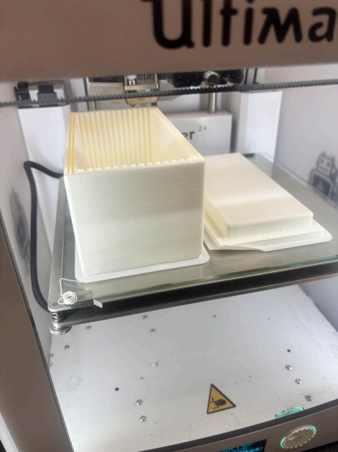
As the next step in the building procedure, the Arduino was tested. By plugging the Arduino into a battery and making sure it was properly connected to the computer, it was clear that the Arduino worked as intended. Then, the accelerometer was connected to the Arduino by wiring the general components / wires into the correct slots in the device.
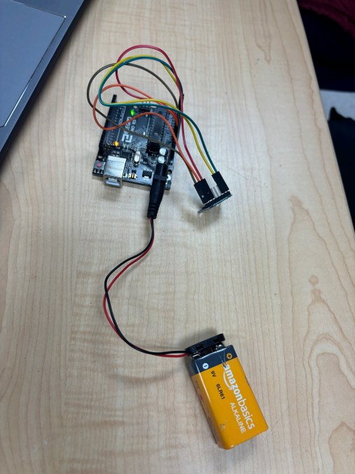
With the accelerometer now connected to the Arduino and therefore a power supply, it became possible to code the device to display important information. The accelerometer was coded so that the pitch and angle at which the accelerometer is sitting are fed into the Arduino and displayed on the computer screen.
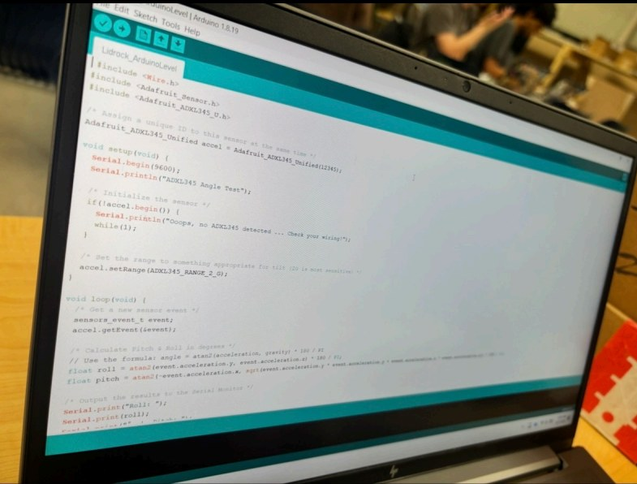
Through the use of mini circuit boards, the buttons and the servo were then wired so that they could be controlled by the Arduino. This made it possible for the device to be coded so that the servo motor is able to turn left and right depending on the inputs of the buttons and accelerometer.
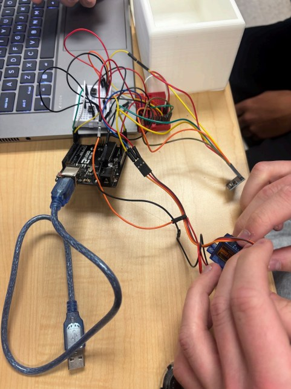
The OLED display was wired to a mini breadboard, connecting it to the power supply of the Arduino. By doing this, it became possible for the display to be used to input the distance from the putting hole, making the device more accurate and useful.
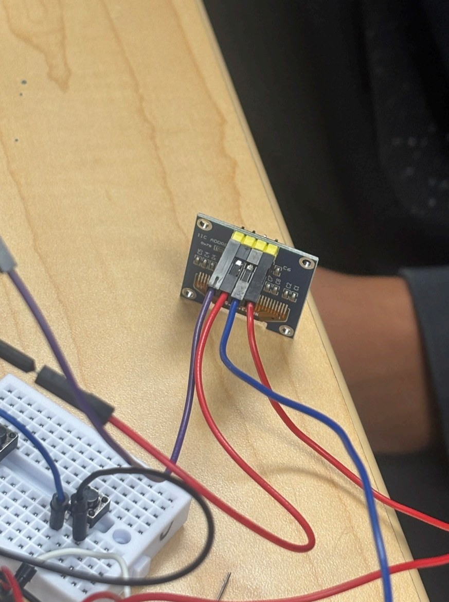
As the servo is used to control the direction the laser points to aid the golfer in knowing where to aim the golf ball, the next step was to attach the laser to the servo. This was done simply with hot glue. The 2 pieces are now securely joined so that if the servo moves, the laser moves with it.
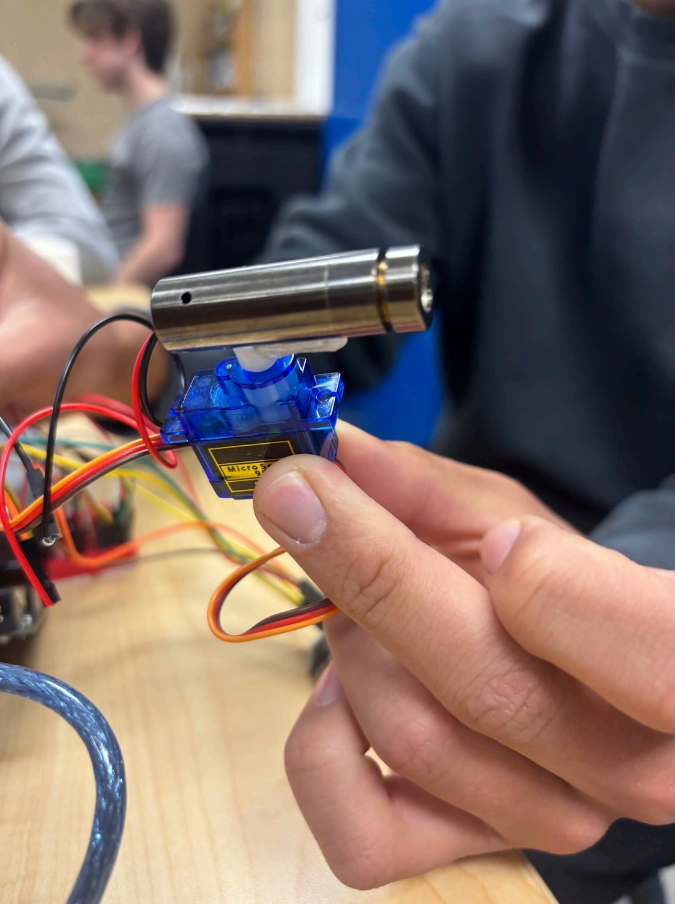
Underneath is an image of the finalized code that was used when creating the device. This code is used for the purpose of helping the novice golfer understand the direction to aim their golf shot in order to successfully get the ball into the hole while on the green.
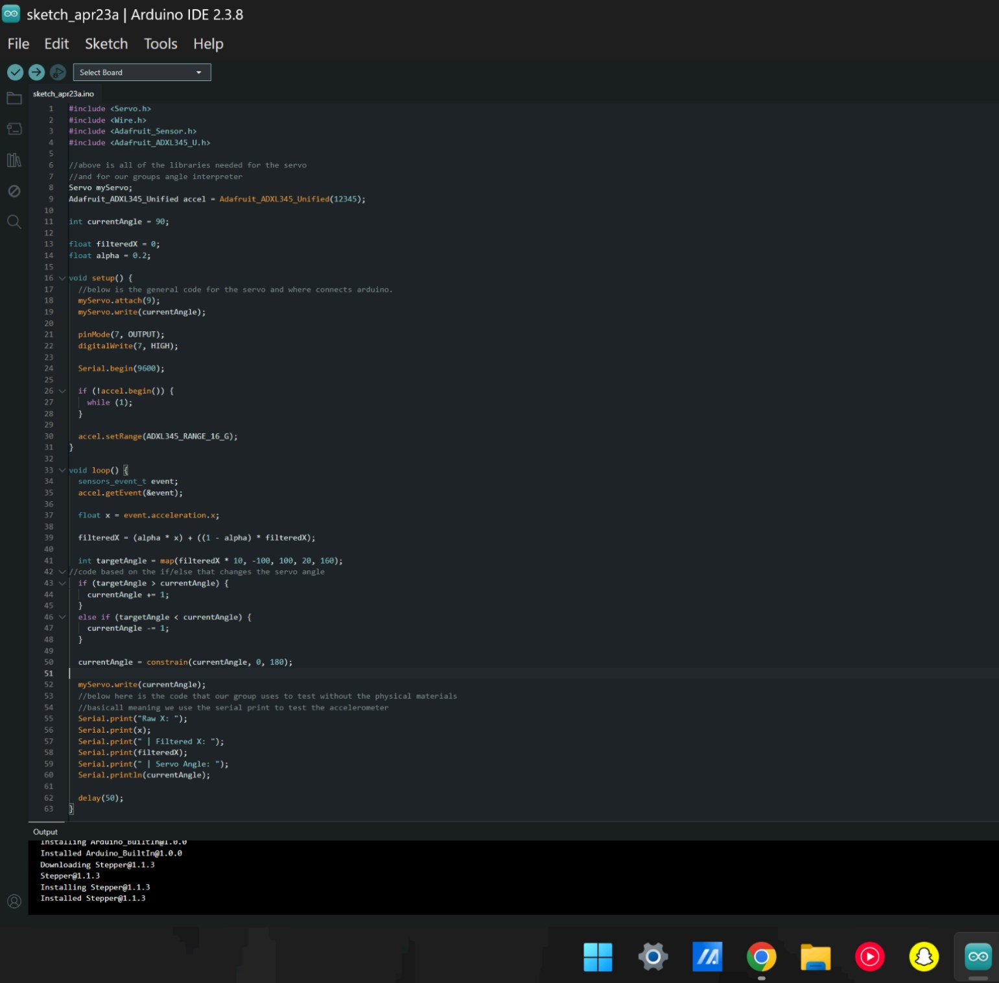
Below is a picture of the device once all the pieces were connected and put inside it. The servo was glued to the edge of the box so that the laser could successfully shine to the outside. The device is sleek and follows practically all set requirements that were created to please the stakeholders.
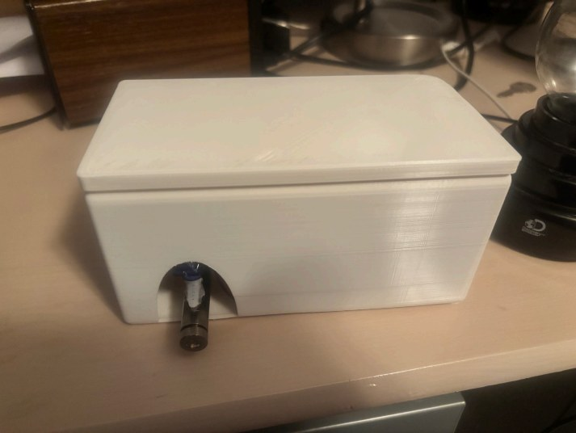
III. Incremental Testing
Onwards to this section of the process, which is strictly based on closely examining each specific portion of the device to ensure every single component works successfully. By properly verifying that there is solid functionality within the components, it reduces the chances of future issues coming up regarding the device.
Incremental testing #1: Testing the Arduino
The first incremental test was to see if the Arduino worked as intended. This was done by attaching a battery pack to the Arduino (as shown in Figure 3.1), and then connecting it to the computer to see if it transferred code properly.
The test was successful as the code transferred properly and the Arduino worked as intended.
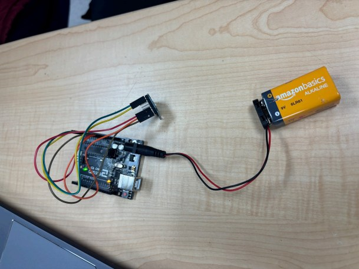
Incremental testing #2: Testing whether the laser works as intended
This testing was done to see if the laser module worked and lit up to the brightness intended. This was done simply by attaching the positive and negative wires to the battery. It ended up working as expected, as shown in the figure below. The laser is bright and is able to work when attached to the Arduino as well.
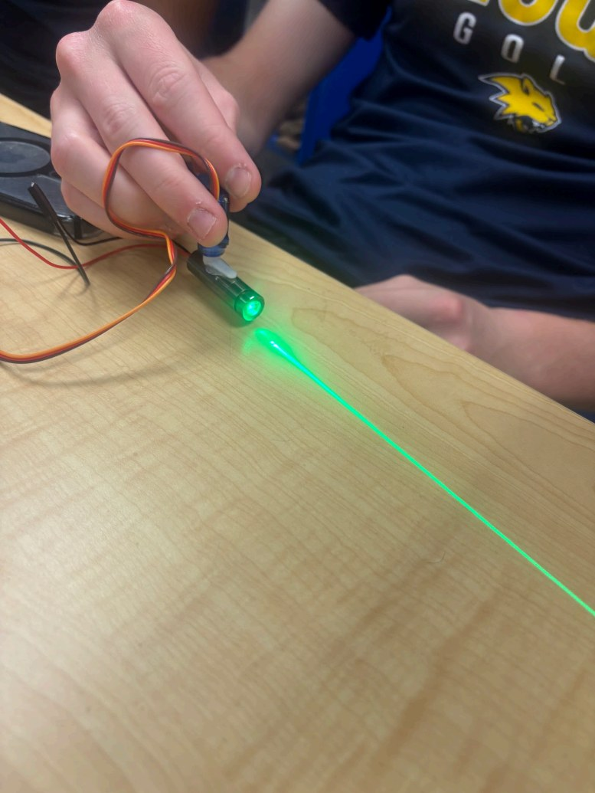
Incremental testing #3: Testing the weight of the device
This testing was done throughout the time the device was being made, as well as at the very end. At the end, it was weighed in at 345 grams, which is less than the maximum of 400 grams that was set for the device. Therefore, the device passed the test.
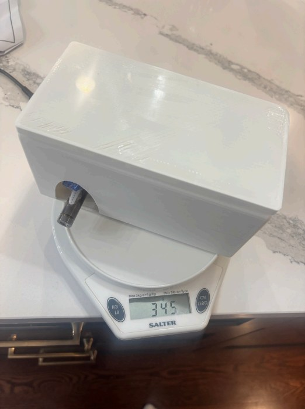
IV. Test Process
Lastly, the process found below focuses on the general procedures that are required to be taken throughout the testing and design process. With the addition that there are several examples shown as to how the data was collected, and the general analysis of the results found.
Battery Life
Procedures:
- Place all materials on the table, including the stopwatch, the device, and the materials used for documentation.
- Insert brand new AA batteries into the battery pack (3 batteries/4.5V) to ensure that batteries are new, for the best results.
- Turn on the device while another group member starts a stopwatch.
- Use and leave the device on under operating conditions consistent with casual golf use.
- Stop the timer once the device shuts off
- Record the time on the documentation sheet.
- Record whether that time means the device passed or failed, and what the reason was for the failure.
Results
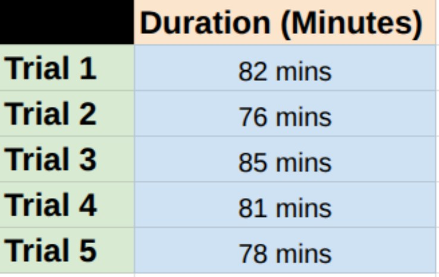
Reflection
Overall, the battery life of this device stayed relatively consistent, ranging from 76 to 81 minutes. This is good for the device as it ultimately changed the amount of AA batteries initially intended to be used for this product from 4 to 3, dropping the voltage from 6V to 4.5V. In the end, the amount of time the device lasted is adequate enough for a golfer to use during their practice routine.
Accuracy
Procedures:
- Gather necessary measuring and documentation tools/materials and find a putting surface of adequate size (20ft diameter)
- Pick out a target (hole or tee in the green) and keep this target consistent
- Work in 5ft increments (5ft, 10ft, 15ft, 20ft) from the target
- Set up the device at each of these increments and have it find the ideal line. Roll a ball along the instructed line at each spot 3 times
- If a ball strikes the target (or gets within the ±2-degree allowed error), count it as a success.
- Repeat this at each increment until finished
- Document the success vs. failure rate
Results
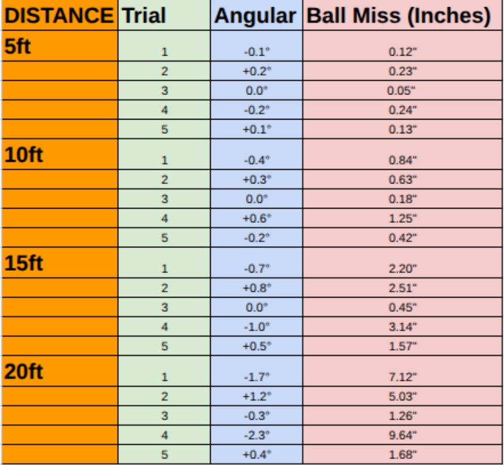
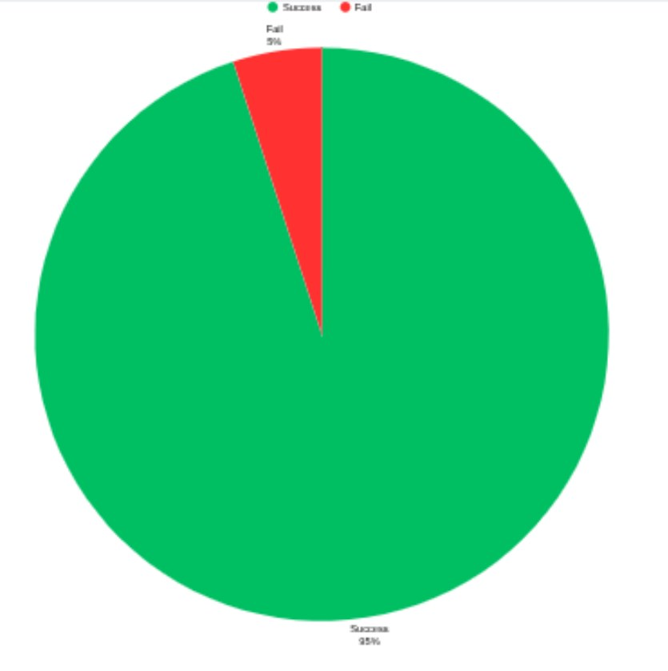
Reflection
This device proved to be very accurate, and especially functioned well throughout a large variety of distances away from the hole. After the 5 trials were run at each distance (the furthest being 20 ft, as that was the device's max range criteria), it was found that it was successful 95% of the time. This ensures a product that can adequately complete its assigned task and allows golfers to receive accurate feedback while they practice their putting.
Safety (Heat)
Procedures:
- Set up the device to run on 3 AA batteries (4.5V)
- Allow the device to run at different time increments (10/15/20/25/30 mins).
- After the time is up, measure the temperature with a digital infrared thermometer
- Document findings and determine if it exceeds the Arduino’s max operating temperature of 1850F
- Document the success vs. failure rate
Results
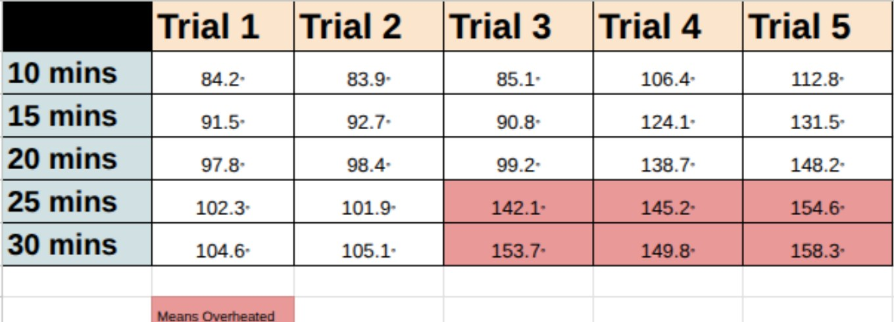
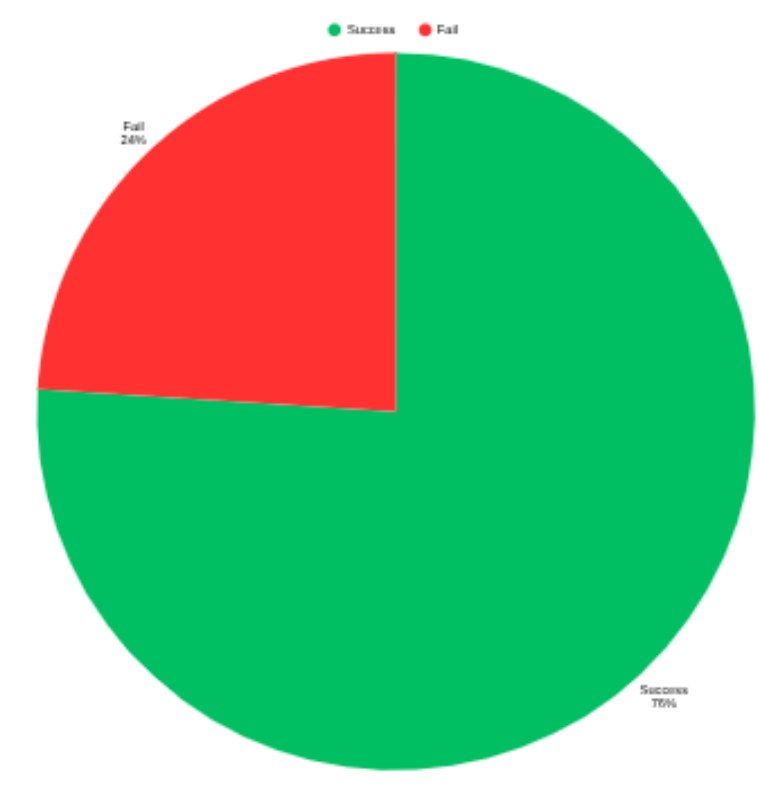
Reflection
Unfortunately, this testing data was not ideal for measuring the device's temperature during operation. Unfortunately, there were moments when the device overheated. Although the device never completely shut down due to high temperatures, it still did reach a point of danger for the device and its components. In the future, the use of higher-quality parts and potentially inner cooling components could provide this device with better performance and temperature control, hopefully boosting its future success rate.
V. Conclusion
Recommendations For Improvement
Battery Life
For the battery life, it is believed that it would be more efficient to use a rechargeable battery rather than one-use AA batteries. A rechargeable battery would allow for better control of voltage/current, ensuring the device has no overheating concerns. This would also save the user the hassle of buying new batteries each time the device dies. Although there may be concerns about charging the device with a high-quality battery, the battery life could be sustainable for extended periods of time.
Accuracy
After testing, the accuracy of this device turned out to be very good, although there is always room for improvement. It would be ideal for this device to have perfect accuracy and an extended range. It would also be ideal to knock down the percent error to a lower value than the current 2 degrees. In order to do this, this device would need higher-quality components. Due to a lack of resources/budget, it was difficult to get components of high accuracy. Buying a higher-end accelerometer and tweaking the code could take this device to the next level, putting it even higher above other products on the golf market.
Safety (Heat)
This device had a problem with regulating its heat. This device had a few trials (especially those of a longer time frame) where the device came dangerously close to causing enough heat to cause damage to itself. One of the key pieces of this is most likely finding the ideal battery type for this device; having batteries with too much voltage can easily cause overheating, resulting in damage to the device. Additionally, ventilation could be put into the box to allow airflow, creating even more opportunity to keep the internal temperature down.
Final Takeaways
Throughout the entirety of the testing and data collection process, a decision was made that the green reading device can be considered as an effective solution to amateurs who struggle with reading the slopes and breaks of greens on the golf course. The overall process of testing the device consisted of incorporating incremental testing and general evaluations of the device to ensure that no issues arose during device usage. Specifically, by using incremental testing with the green slope reader, there essentially was a safety net/barrier (that could be relied on) which merely checked that each component was able to fully function properly without experiencing any sort of big issues. In other words, by testing each component individually without having it be connected to any of the other parts reassures that any sort of issues that arise are caused by problems within connecting the components together rather than the individual conflicts within the components.
As for the data that was collected, many factors were taken into consideration. The first being accuracy, which provided the results that the green reading device functioned at a high percentage and was overall very successful. Further exceeding the expectations that the device was not only reliable but also showed pristine examples of safety, usability, and consistent battery life. This was thoroughly indicated and highlighted in the testing mentioned above that the weight and size constraints, which were implemented a while ago, had both successfully been met and ensured that the device was still portable for the average golfer/user. The constraint in regards to the battery life was additionally fully functional and worked flawlessly due to the results of the data (being collected), all pointing towards the direction that the device could fully operate during golfing practice grounds and had no issues during long periods of time.
Another important matter to take into consideration was the overall accuracy of the device, which provided general reliable feedback. This was a very good sign, given that both users and customers from the targeted golf market would expect the highest from a device that provides green reading output such as this. Also, the general testing process used both qualitative and quantitative data as the results directed towards new ideas that could be thought about when looking for new/future improvements. Ultimately, whether it was through the process of testing or time spent collecting the data that was used for analysis, the green reading device was relatively effective and showed potential to have a significant impact on future golfers.
-
Cunningham, Kevin. “Here’s How Your Handicap Index Stacks up against Golfers in the United States.” Golf, 9 Sept. 2020, golf.com/news/how-your-handicap-index-compares/. ↩